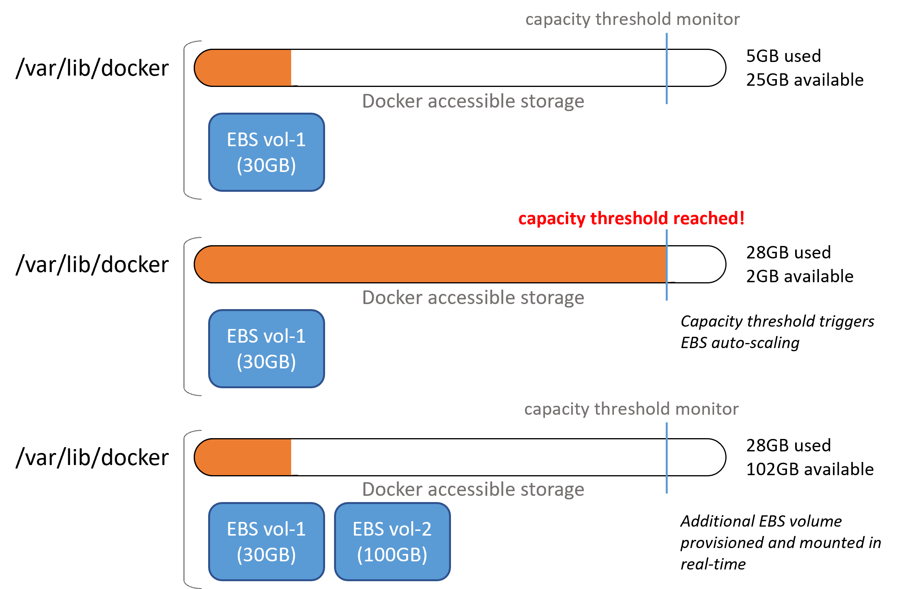

Anyone who has tried running bioinformatic pipelines on AWS batch with a workflow manager such as Nextflow will be well aware of the common error
error: No space left on device
that can plague a pipeline. Yes, you can adjust your EBS allocation with specific AMI images or launch configurations and tailor them to specific tasks, but the dynamic nature of bioinformaticslogy means this will likely be an ongoing cat üêà and mouse üêÅ game.
Yes, Nextflow has the fantastic resume feature if your pipeline has already completed a large proportion of tasks, unfortunately though the config file is not reanalysed upon resume, so you cannot point to a new AMI with an increased EBS volume.
The solution? Automatic scaling of your EBS volumes in real-time. Essentially there is a script that resides within your AMI that continously monitors disk usage, and just before you reach 100%, it provisions a new EBS volume mounting it directly to your running EC2 instance. You also get the added benefit of better EBS cost optimisation üí∞ as you no longer need to ‚Äòover provision‚Äô your batch EC2 instances.

The setup can be split into two components, installing the auto-scaling scripts in your AMI and updating your Batch compute environments with appropriate permissions.
Setup an appropriate IAM Role
Click Create role under the IAM AWS console and select AWS service as the trusted entity type and EC2 as the use case, then click Next.
Click Create policy and select the JSON tab.
Paste the following JSON code and click Next.
{
"Version": "2012-10-17",
"Statement": [
{
"Effect": "Allow",
"Action": [
"ec2:AttachVolume",
"ec2:DescribeVolumeStatus",
"ec2:DescribeVolumes",
"ec2:DescribeTags",
"ec2:ModifyInstanceAttribute",
"ec2:DescribeVolumeAttribute",
"ec2:CreateVolume",
"ec2:DeleteVolume",
"ec2:CreateTags"
],
"Resource": "*"
}
]
}Add any tags if applicable and click Next
Give your policy a name e.g. amazon-ebs-autoscale-policy and click Create policy
Now under the Add permission menu of your new IAM Role, select your newly created policy, i.e. amazon-ebs-autoscale-policy and click Next
Give your Role and name, e.g. amazon-ebs-autoscale-role and click Create role
You also need to add the amazon-ebs-autoscale-policy policy role to the ecsInstanceRolerole you use in your AWS Batch compute environments.
Under Roles in the AWS IAM console, find and click the ecsInstanceRole role.
Click Add permission and select Attach policies. Find/search for your new amazon-ebs-autoscale-policy, select it and click Attach policies.
Install the auto-scale scripts
Fetch or clone the amazon-ebs-autoscale repository to your local computer.
Edit the EBS mount location to the volume that docker utilises by adding the
-m /var/lib/dockerparameter to theinstall.shcommand in theamazon-ebs-autoscale/templates/cloud-init-userdata.yamlfileSpecify the initial drive to use for the mount point to be
/dev/xvdbawith the-dparameterBy default, the 100GiB volume will be initially provisioned at startup to change this add the -s parameter again to the
install.shcommand in theamazon-ebs-autoscale/templates/cloud-init-userdata.yamlfile. For example, to reduce it to 30GB use-s 30the
runcmd:section should now look something like this:
runcmd:
- curl -s "https://awscli.amazonaws.com/awscli-exe-linux-x86_64.zip" -o "/tmp/awscliv2.zip"
- unzip -q /tmp/awscliv2.zip -d /tmp && /tmp/aws/install
- EBS_AUTOSCALE_VERSION=$(curl --silent "https://api.github.com/repos/awslabs/amazon-ebs-autoscale/releases/latest" | jq -r .tag_name)
- cd /opt && git clone https://github.com/awslabs/amazon-ebs-autoscale.git
- cd /opt/amazon-ebs-autoscale && git checkout $EBS_AUTOSCALE_VERSION
- sh /opt/amazon-ebs-autoscale/install.sh -m /var/lib/docker -d /dev/xvdba -s 30 2>&1 > /var/log/ebs-autoscale-install.log- To install the amazon-ebs-autoscale scripts with your defined parameters into your chosen AMI you can use the
aws ec2 run-instancecommand from the aws-cli. An example of launching your chosen AMI and installing the amazon-ebs-autoscale scripts is
aws ec2 run-instances --image-id YOUR-AMI-ID \
--key-name YOUR-KEY-PAIR-NAME \
--subnet-id YOUR-SUBNET-ID \
--user-data file://./templates/cloud-init-userdata.yaml \
--count 1 \
--security-group-ids YOUR-SECURITY-GROUP-ID \
--instance-type t2.micro \
--iam-instance-profile Name=amazon-ebs-autoscale-role- Running this from your command line will launch an EC2 instance which you can then save as a new AMI with an appropriate name. (see my Nextflow on AWS Batch blog post for details on how to save AMIs and use them in later Batch compute environments)
The final step is to reconfigure your Batch compute environment to utilise the EBS autoscaling AMI
Click Computer environments in the AWS Batch console and click Create
Select Amazon Elastic Compute Cloud (Amazon EC2) as the configuration and Managed as the orchestration type and enter an appropriate name.
Ensure AWSServiceRoleForBatch is selected as the service role and ecsInstanceRole as the instance role and click Next page
NoteThe updated ecsInstanceRole now contains the permissions required for autoscaling.
Leave Minimum and Desired vCPUs as 0. Maximum vCPUs controls the number of parallel vCPU tasks running in your compute environment. Increase or decrease this to an appropriate number based on your requirements.
With EBS autoscaling implemented, you can now generally use optimal as the allowed instance type without many of the previous risks of errors and failed pipelines.
Under ‘Additional configuration’ you can define the allocation strategy
BEST_FIT(default) AWS Batch selects an instance type that best fits the needs of the jobs with a preference for the lowest-cost instance type. If additional instances of the selected instance type aren’t available, AWS Batch waits for the additional instances to be available. If there aren’t enough instances available, or if the user is reaching the Amazon EC2 service quotas, then additional jobs don’t run until currently running jobs are complete. This allocation strategy keeps costs lower but can limit scaling. If you’re using Spot Fleets withBEST_FIT, the Spot Fleet IAM Role must be specified.BEST_FITisn’t supported when updating compute environments. For more information, see Updating compute environments.BEST_FIT_PROGRESSIVEAWS Batch selects additional instance types that are large enough to meet the requirements of the jobs in the queue. Instance types with a lower cost for each unit vCPU are preferred. If additional instances of the previously selected instance types aren’t available, AWS Batch selects new instance types.SPOT_CAPACITY_OPTIMIZEDAWS Batch selects one or more instance types that are large enough to meet the requirements of the jobs in the queue. Instance types that are less likely to be interrupted are preferred. This allocation strategy is only available for Spot Instance compute resources.Under ‘EC2 configuration’ click Add EC2 configuration and select Amazon Linux 2 as the image type and paste the AMI ID that you created earlier in the ‘Image ID override’ box.

Click Next page and enter the appropriate network configuration for your VPC
Click Next page, check your settings and then click Create compute environment
Still within the Batch AWS console and click on Job queues.
- Click Create and select ‘Amazon Elastic Compute Cloud (Amazon EC2)’ as the compute environment.
- Enter a suitable name for your new job queue (üìù take note of this name you will need it later)
- Under ‘Connected compute environments’ select the compute environment that you just created
- Click Create job queue
You now need to update the config files of your Nextflow pipelines to point to the new Batch job queue.
Now enjoy your Nextflow pipelines with no reduced errors.